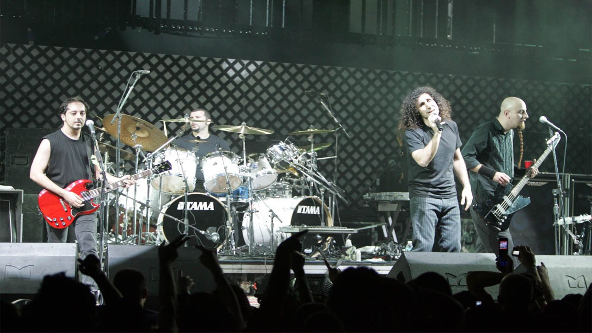
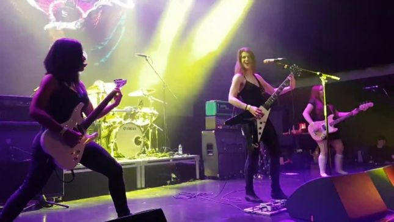
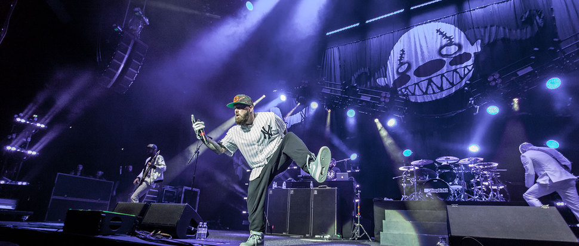
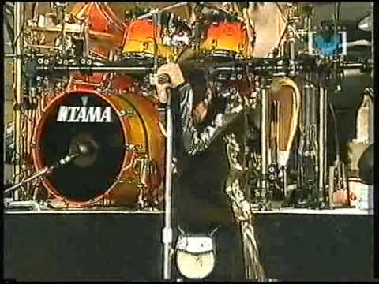
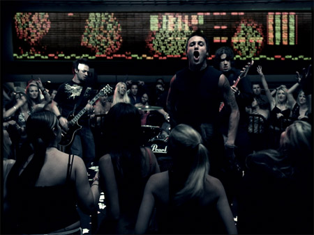
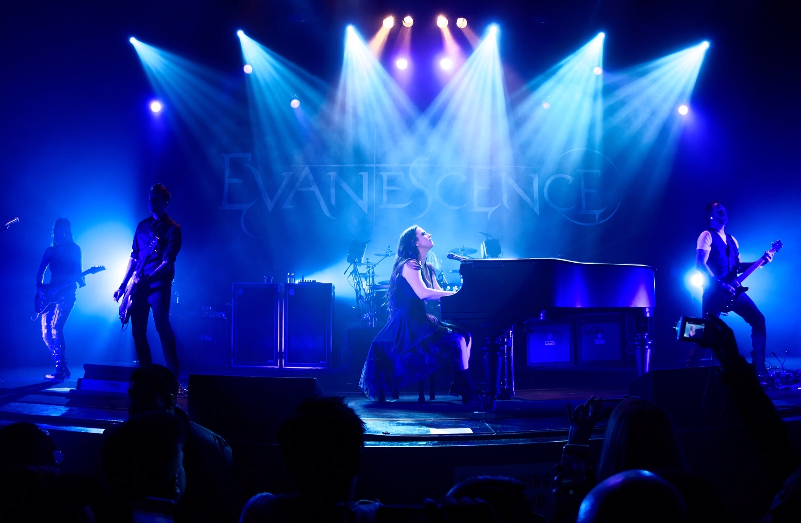

História do New Metal: New metal (também conhecido como nü-metal, aggro-metal, neo-metal ou new metal) é um subgénero do heavy metal. É uma fusão musical que combina elementos do metal com outros géneros, como o hip-hop e a música industrial. É classificado como parte do metal alternativo. Origens:  Bandas de rock dos anos de 1980 e 1990, incluindo Korn, Faith No More, Red Hot Chili Peppers, Janes Addiction, Tool, Staind, Alice in Chains, Rage Against the Machine, Pantera, Fear Factory, Sepultura e Drowning Pool foram identificados como os alicerces das bases para o desenvolvimento do nu metal, ao combinar riffs agressivos com estruturas pop e influências a partir de uma variedade de gêneros, dentro e fora do heavy metal. Os discos Angel Dust, King for a Day Fool for a Lifetime e o single “Epic” do Faith No More são considerado por alguns como a primeira encarnação do nu metal, como afirma o antiMusic "Epic foi (infelizmente para uma verdadeira banda hasteadora da bandeira do avant-garde como o Faith No More) protótipo do modelo do rótulo que olheiros da música buscavam para recrutar. E eles o fizeram. Isso não é uma defesa da ideia que o Faith No More foi o único catalisador atrás do que finalmente se transformou no nu metal da descrição de Jonathan Davis. Muito pelo contrário". Caracteristas:  Bandas associadas com nu metal derivam influência de uma variedade de estilos diversos, incluindo a música eletrônica, funk, rock gótico, grunge, hardcore punk, hip hop, metal industrial, jazz, pós-punk, rock sinfônico e synthpop. O nu metal também deriva influências de vários sub-gêneros do metal pesado, incluindo rap metal, o funk metal, metal alternativo e thrash metal. A música do nu metal é principalmente sincopado e com base em riffs. Quebras no meio das canções, e faltas de solos contrasta com outros subgêneros do metal. Outro contraste com outros subgêneros do metal é sua ênfase no ritmo, tendendo a mais elementos de ritmo do groove metal. Semelhanças com outros subgêneros do metal pesado incluem o uso de compasso, guitarras distorcidas, power chords e estruturas de nota principalmente girando em torno de estilos dorianos, eólicos ou frígios. Muitas bandas de nu metal usam guitarras de sete cordas ao contrário das mais tradicionais guitarras de seis cordas. Guitarras de sete cordas, que são, por vezes, afinadas para aumentar a sensação de peso, resultam em baixistas usando instrumentos de cinco e seis cordas. DJs às vezes também são utilizados em instrumentações rítmicas adicionais, tais como em sampling e scratching e temas de fundo eletrônicos. No nu metal é observada uma grande participação de mulheres em contraste com gêneros de metais, incluindo bandas como Coal Chamber, Evanescence e a toda feminina Kittie. Os estilos de vocal do nu metal variam entre o canto melódico, rap, screaming e o death growling, às vezes usando vários desses estilos dentro de uma mesma música. As letras de muitas bandas de nu metal concentram-se na dor e na alienação pessoal, em vez dos temas de outros subgêneros de metal. O nu metal usa a estrutura de versos do pop tradicional, com refrões e pontes, contrastando-a com a de outros gêneros de metal, tais como o thrash e o death metal. Trevor Baker, do jornal de The Guardian escreveu que "Bandas como Linkin Park, Korn e até mesmo o tão injuriado Limp Bizkit também, aliás, fizeram muito mais para quebrar as barreiras artificiais entre "música urbana" e o rock do que qualquer um dos seus homólogos mais criticamente aceitáveis. Seus concertos também atraiam um grande número de mulheres, que é muito mais do que você poderia dizer para qualquer uma das antigas banda de metal". A moda nu metal pode incluir camisas largas, camisas esportivas e jaquetas, singletos de basquete e shorts, capuzes, calças de carga, moletons, dreadlocks, cabelo espetado, piercings, tatuagens, macacão e sweatsuits. As principais marcas associadas ao movimento são ADIDAS e Puma. Desenvolvimento inicial:  As origens do termo são frequentemente atribuídas ao trabalho do produtor Ross Robinson, às vezes chamado de " O Poderoso Chefão do Nu Metal". Muitas das bandas de nu metal primeiramente vieram da Califórnia, como Korn, que foi pioneira no som nu metal com o lançamento de seu álbum demo em 1993,Deftones e P.O.D.. Outras bandas influentes são Staind de Massachusetts, Limp Bizkit da Flórida, e Slipknot de Iowa. Os riffs agressivos de Korn, o rap rock de Limp Bizkit e as baladas acústicas de Staind criaram o modelo sonoro para nu metal. Em 1994 o vídeo clipe da canção de estreia do Korn, "Blind", que foi amplamente transmitido na MTV, expôs o nu metal para um público maior em um momento em que o grunge dominava. O nu metal continuou a alcançar reconhecimento através MTV e com a introdução de 1995 do Ozzfest de Ozzy Osbourne, o que levou a mídia a falar de um ressurgimento do heavy metal. O Ozzfest foi fundamental para lançar as carreiras de várias bandas de nu metal, incluindo Limp Bizkit e Godsmack em 1998, e System of a Down em 1999. Popularidade:  1998 é geralmente reconhecido como o ano de invasão do cenário do nu metal, com o terceiro álbum do Korn, Follow the Leader se tornando um sucesso de multi platina e abrindo o caminho para outras bandas do estilo. Por este ponto a maioria das bandas de nu metal estava tocando uma combinação de thrash metal, hip hop, industrial, punk hardcore e grunge. Artistas estabelecidos, como Sepultura, Slayer, Vanilla Ice e Machine Head lançaram álbuns que tinham influencia do novo estilo. Em Sound of the Beast: The Complete Headbanging History of Heavy Metal, Ian Christie escreveu que o gênero demonstrou que o "metal pancultural poderia vingar". Em 1999, uma banda de nu metal de Iowa, Slipknot surgiu com um som escuro e pesado, lançando seu álbum de estreia, que vendeu mais de 2 milhões de cópias nos Estados Unidos sozinho, com Rick Anderson do Allmusic escrevendo "Você pensou que Limp Bizkit era pesado? Eles são os Osmonds. Esses caras são uma coisa completamente diferente". O segundo álbum do Limp Bizkit Significant Other, lançado em 1999, alcançou o número 1 na Billboard 200, vendendo 643.874 cópias em sua primeira semana de lançamento. Em sua segunda semana, o álbum vendeu 335.000 cópias. Em 2000, Limp Bizkit lançou Chocolate Starfish and the Hot Dog Flavored Water, estabelecendo um recorde de mais vendas em uma semana para um álbum de rock com mais de um milhão de exemplares vendidos nos Estados Unidos em sua primeira semana de lançamento, com 400 mil dessas vendas em seu primeiro dia, tornando-se o álbum de rock mais vendido do mundo, quebrando o registro mundial realizado há sete anos pelo Vs do Pearl Jam. No mesmo ano, o álbum do Papa Roach, Infest, e o “The Sickness“ do Disturbed se tornaram sucessos com disco de platina. No final de 2000, Linkin Park lançou seu álbum de estreia, Hybrid Theory, que permanece tanto como o álbum de estreia mais vendido por qualquer artista no século XXI, e o álbum mais vendido de nu metal de todos os tempos. O disco também foi o álbum mais vendido de todos os gêneros em 2001, ganhando para a banda um Grammy para o segundo single do álbum, Crawling", com o quarto single, In The End, lançado no final de 2001, tornando-se uma das músicas mais reconhecidas na primeira década do século 21. Em 2001, o terceiro álbum do Staind, Break The Cycle, estreou em número um na Billboard 200 com primeira semana de vendas de 716.003 cópias. Nesse mesmo ano o Slipknot lançou seu segundo álbum, Iowa, que chegou ao número 3 na Billboard 200, passando a vender mais de um milhão de cópias nos Estados Unidos. o crítico John Mulvey proclamou que o álbum era o "absoluto triunfo do nu metal". Também nesse ano o disco Satellite, do P.O.D também foi um sucesso comercial, estreando na posição de número 6 na Billboard 200. Decadência:  Em 2004, os críticos começaram a afirmar que a popularidade mainstream do nu metal estava diminuindo, citando o fato de que o tão aguardado quinto álbum do Korn, Untouchables, e o terceiro álbum de estúdio do Papa Roach, Getting Away with Murder, não venderam tanto quanto seus antecessores, e as bandas de nu metal estavam sendo tocadas cada vez menos nas estações de rádio e na MTV, que começou a se concentrar no metalcore e no movimento emo. O álbum de estreia do Evanescence, Fallen, também foi lançado no mesmo ano. Muitos críticos observaram o som nu metal do álbum, cuja canção vencedora do Grammy, Bring Me To Life foi comparado favoravelmente com o estilo do Linkin Park. Meteora e Fallen em terceiro e quarto, respectivamente, se tornaram os álbuns mais vendidos de 2003, e projetam-se para vender quase 35 milhões de cópias por volta de 2012. Ambas as bandas lançaram singles bem vendidos ao longo de 2003 até meados de 2004. Também em 2003, Korn e Limp Bizkit lançaram seus novos álbuns Take a Look in the Mirror e Results May Vary, ambos vendidos consideravelmente menor do que os seus trabalhos anteriores. Korn chegou a admitir que Take a Look in the Mirror foi feito às pressas, enquanto que leitores da revista Guitar World nomearam o Limp Bizkit como a "pior banda de 2003", juntamente com a banda de pós-grunge Creed. Em 2005, o Hybrid Theory do Linkin Park recebeu uma certificação de diamantes pela RIAA por dez milhões de cópias vendidas. Em meados da década de 2000, o metalcore e o New Wave of American Heavy Metal tornaram-se o subgênero do metal dominante no mainstream e no público particular do metal. Apesar do enorme sucesso de Linkin Park e Evanescence, o nu metal continuou a diminuir em popularidade. Relacionando ao da popularidade de sua banda, Fred Durst disse: "Aqui uma coisa dizer que, em 2000, havia 35 milhões de pessoas que haviam ligado-se a esta banda. Doze anos depois, muitas dessas pessoas mudaram. Nós éramos um momento no tempo que acabou." Muitas bandas de nu metal experimentaram outros gêneros e sons. Enquanto o Deftones e o P.O.D mantiveram vários de seus traços de nu metal, eles acabaram por evoluir para um metal mais alternativo, eliminado o rap em seus lançamentos posteriores em quase todas as suas músicas. O terceiro álbum de estúdio de Linkin Park, Minutes to Midnight, lançado em 2007, foi conhecido pelo completo adeus da banda à sua assinatura de banda de nu metal, enquanto que o Incubus, outra banda popular de nu metal, também abandonou o gênero em favor de um rock de rádio com uma abordagem alternativa amigável. Outras bandas de nu metal, como o Disturbed e Slipknot voltaram-se para um som do heavy metal tradicional. 2010's:  Apesar da diminuição da popularidade de tocagem nas rádios, algumas bandas de nu metal ainda obtém sucesso comercial. O nono álbum de estúdio do Korn Korn III: Remember Who You Are, vendeu 63.000 cópias em sua primeira semana nos EUA, sendo número dois na Billboard 200. Em 6 de dezembro de 2011, o álbum vendeu 185.000 unidades nos Estados Unidos. e recebeu críticas positivas. Em 2011, o aguardado sexto álbum de estúdio do Limp Bizkit, Gold Cobra, foi um sucesso comercial, vendendo 63.000 cópias nos Estados Unidos e atingindo a posição 16 na Billboard 200, tendo o álbum recebido críticas em sua maioria positivas. Também em 2011, o álbum álbum auto-intitulado do Staind estreou em número cinco na Billboard 200, com vendas em primeira semana de 47.000 cópias. Em 19 de novembro de 2011, o disco havia vendido mais de 100.000 cópias e recebido alguns dos comentários mais positivos a banda já havia recebido em sua carreira. O tão esperado terceiro álbum do Evanescence, de mesmo nome estreou no número um na Billboard 200 e em outras paradas dos Estados Unidos, vendendo mais de 127.000 cópias na primeira semana, e 284 mil cópias até essa data. Ele também alcançou altas vendas em volta do mundo, recebendo certificações no Reino Unido, Canadá e Austrália em 2012. Isto trouxe na mídia discussões sobre uma possível volta do nu metal. Em 2 de dezembro de 2011, Korn lançou the Path of Totality, vendendo cerca de 55.000 cópias em sua primeira semana. Muitos citaram esse álbum como uma nova direção para nu metal, com a banda tomando influência da música eletrônica, principalmente do Dubstep. Artistas colaborando no álbum incluíam Skrillex, 12th Planet e Excision. O álbum recebeu críticas em sua maioria positivas, ganhando um Golden Gods de melhor álbum. Algumas bandas no Brasil, estão fazendo fama no underground como Lekhaina, Experimento 20 que conta com alguns ex membros da Lekhaina e A Última Theoria. Nu metal extremo: Extreme nu metal é um subgênero do nu metal. É caracterizado por uma combinação dos ritmos característicos deste estilo com elementos do metal extremo, como com death e thrash metal. O extreme nu metal começou na cena underground na década de 1990, paralelamente com o início do novo metal com o Korn, considerados os "mestres do extreme nu metal" Um dos representantes do gênero é a banda britânica Raging Speedhorn. As bandas de extreme nu metal começam a sair do underground e a se popularizar no início dos anos 2000, através da banda Slipknot, considerada do gênero, especificamente com o Iowa (álbum). Em relação a esse álbum, as críticas abordavam sempre o mesmo ponto de vista: Toques eletrônicos tradicionais do nu metal, porém sem muita técnica instrumental e vocais graves e semi-gutural. Algumas Bandas que Você deve conhecer: Formulario de pesquisa: O que você está achando sobre este site? Ajude-nos a melhorar CLIQUE AQUI Fonte: Data: 13/03/2021 – Sábado Horário: 16:57:21 Criado e Desenvolvido por: Pedro Rammé Figueira